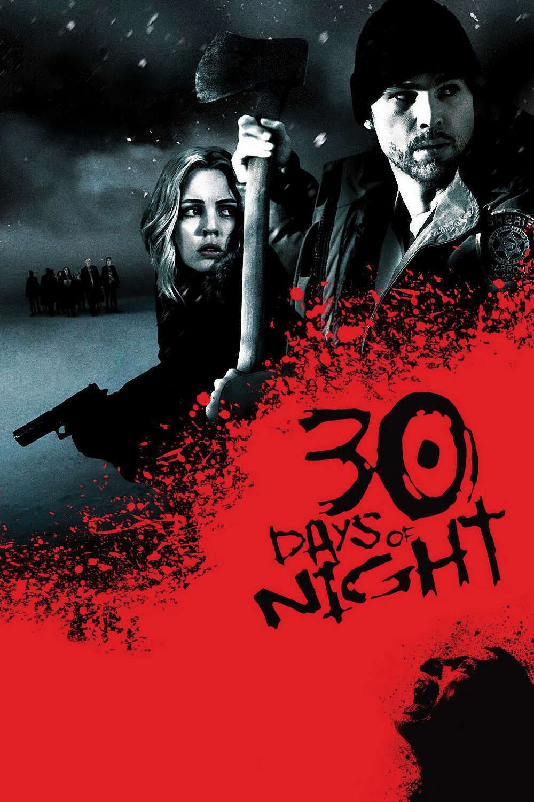

Cinema, as an art form, has always mirrored humanity's fears, desires, and complexities. Among its many genres, horror stands as the most visceral and essential, delving into the depths of the human psyche and challenging viewers to confront their darkest fears. Despite being dismissed by some as exploitative or trivial, horror cinema is arguably the most important genre because it addresses universal anxieties, evolves with societal changes, and provides a safe space for catharsis and understanding of the unknown.

Horror cinema uniquely reflects the cultural and historical fears of its time. During the Cold War, films like Invasion of the Body Snatchers encapsulated the paranoia of infiltration and the fear of losing individuality. In the wake of the Vietnam War, movies such as The Texas Chain Saw Massacre showcased societal disillusionment and the grotesque consequences of violence. Today, horror frequently tackles themes like environmental collapse (The Last of Us), systemic racism (Get Out), and technological overreach (Black Mirror). By weaving real-world anxieties into terrifying narratives, horror provides audiences with a lens through which they can examine the world and their place within it.
Horror has consistently pushed the boundaries of filmmaking, often pioneering new techniques that influence cinema as a whole. Alfred Hitchcock’s Psycho redefined suspense and introduced modern psychological horror, while John Carpenter’s Halloween gave birth to the slasher subgenre and influenced decades of filmmaking. Today, filmmakers like Jordan Peele and Ari Aster are redefining the genre with psychologically complex narratives and visual storytelling that defy traditional norms. The genre’s reliance on atmosphere, sound design, and practical effects has made it a testing ground for new ideas, many of which trickle down into other genres.

Horror is unparalleled in its ability to evoke intense emotional responses, providing viewers with a safe outlet for fear. Watching a horror film is a controlled experience: audiences can confront their fears—death, loss, isolation—within the safety of a theater or living room. This emotional rollercoaster often results in catharsis, leaving viewers with a sense of relief and empowerment. Moreover, horror films help build emotional resilience. By facing simulated danger, people can become more adept at managing real-world anxieties, much like how exposure therapy works in psychological practice.
Horror has often served as a platform for marginalized voices and subversive narratives. Female protagonists, often relegated to secondary roles in other genres, are central to horror, from Laurie Strode in Halloween to Sienna Shaw in Terrifier 2. The genre also empowers filmmakers from diverse backgrounds to tell stories that resonate with their unique cultural experiences, such as His House, a horror film about immigration, or Candyman, which examines racial and social inequalities. By subverting norms and embracing diversity, horror challenges societal prejudices while entertaining its audience.
The communal aspect of horror makes it one of the most engaging cinematic experiences. The shared gasps, screams, and laughter in a packed theater foster a unique bond among viewers. This collective engagement not only amplifies the emotional impact of the film but also underscores humanity’s shared fears and experiences. In a world often divided, horror brings people together in their primal reactions, reminding us of our common humanity.
Horror cinema stands as a crucial pillar of storytelling, addressing societal fears, pushing creative boundaries, and providing profound emotional and philosophical insights. It challenges us to confront our darkest thoughts and fears, emerging stronger on the other side. While other genres entertain, inspire, or educate, horror does all these while tapping into the most fundamental aspects of the human condition. For these reasons, horror cinema is not only important—it is indispensable.
A creak, a whisper, a shadow's breath,
The air is thick with silent death.
Eyes unseen, but watching still,
The dark now bends to claim its will.

Exploring the Top 10 Horror Films of All Time